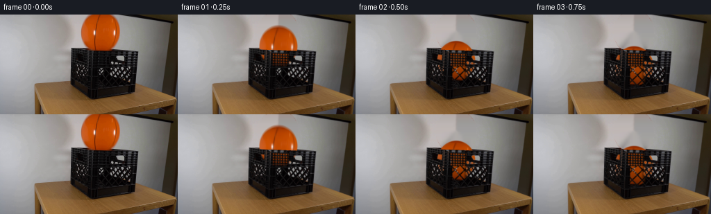
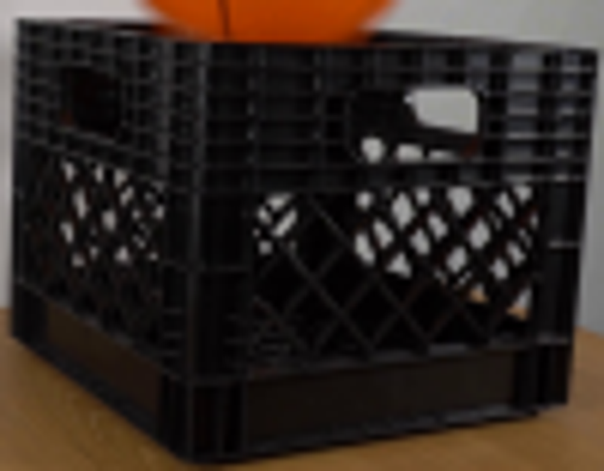
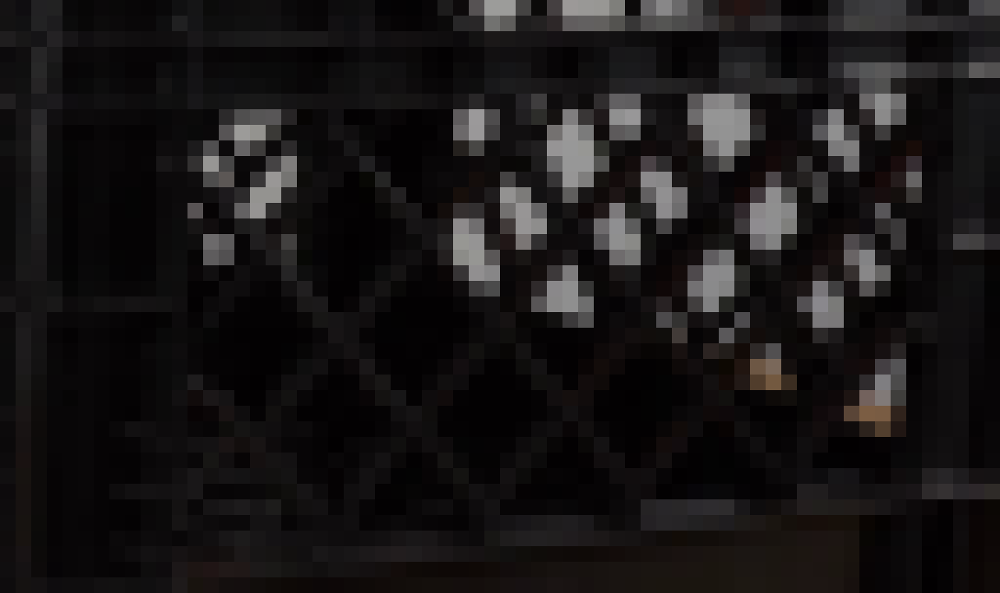
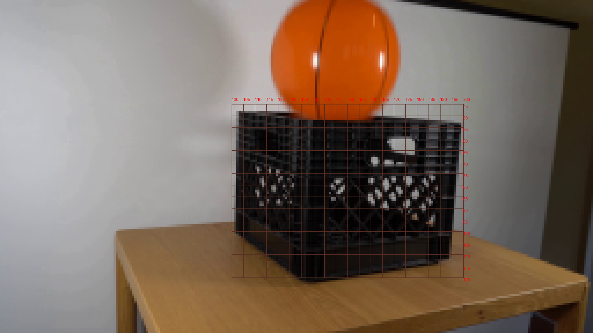
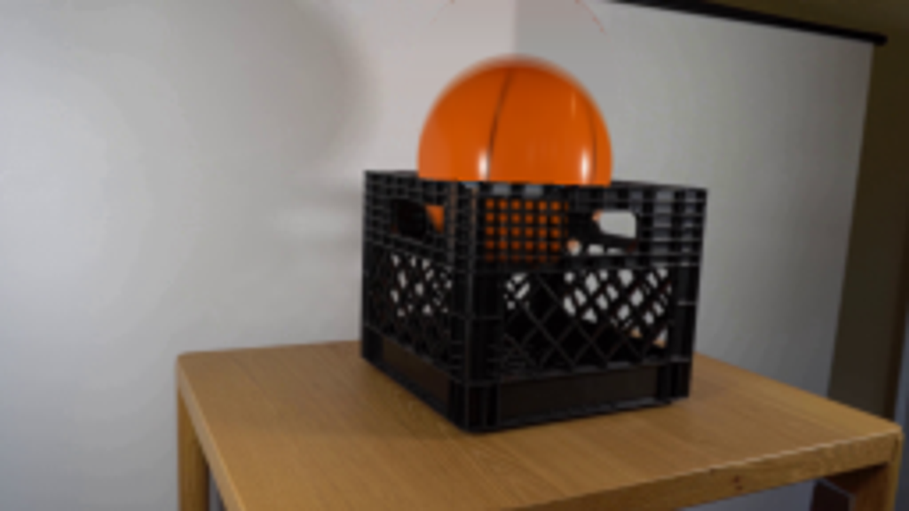
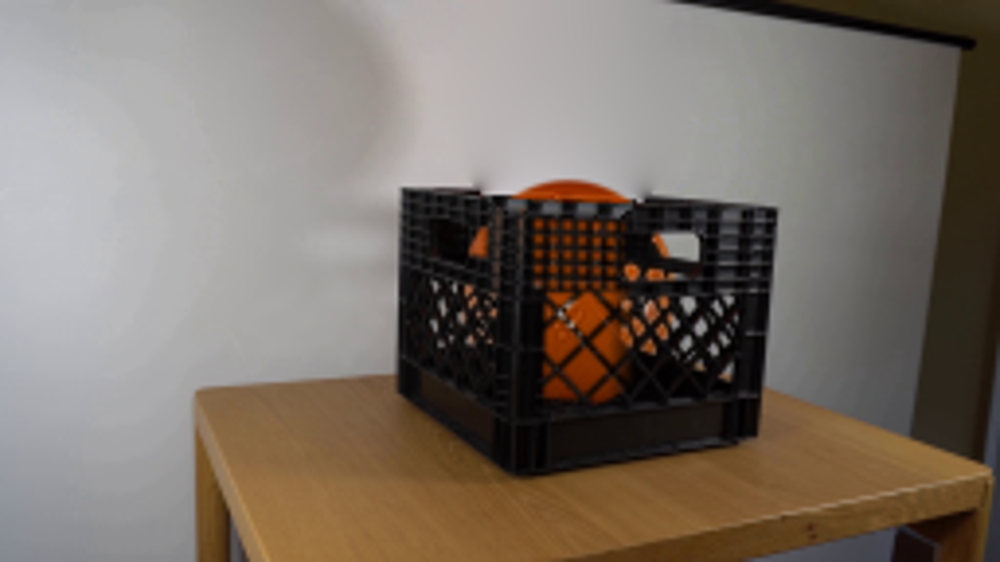

CODING AGENTS AS PIXEL WORLD MODELS
traex/GPT-6.1-Sol · 0013
点击播放 · 原生 RGB 像素
逐轮保存的候选
回放视频、检查图与代码变化。
每份候选均可单独播放。实际图片检查记录在下方工具轨迹中。
候选 01播放与检查图
点击播放 · 原生 RGB 像素

展开代码变化
--- 上一保存版本
+++ 本次保存版本
@@ -0,0 +1,168 @@
+from pathlib import Path
+import numpy as np
+import cv2
+from PIL import Image, ImageDraw
+from scipy.ndimage import gaussian_filter, map_coordinates
+from artifact_io import save
+
+ROOT=Path(__file__).resolve().parent
+S=4
+H,W=144,256
+first=np.asarray(Image.open(ROOT/'first_frame.png').convert('RGB'))
+y,x=np.mgrid[:H,:W].astype(float)
+cx0,cy0,rx,ry=144.48094,24.83434,27.41289,29.09087
+r=np.sqrt(((x-cx0)/rx)**2+((y-cy0)/ry)**2)
+# Restore the wall behind the released ball, using only neighboring wall pixels.
+top=48.05+.049*(x-102)
+remove=(r<1.065)&(y<top+5)
+wall=first.copy()
+wall_mask=((r<1.085)&(y<top+1.0)).astype(np.uint8)*255
+# Temporarily continue the wall down past the lip, so that dark plastic does not
+# bleed upward into the region previously hidden by the ball during inpainting.
+for yy in range(46,59):
+ for xx in range(110,177):
+ if r[yy,xx]<1.12:
+ wall[yy,xx]=first[min(yy,43),108]*(1-(xx-108)/73)+first[min(yy,43),181]*((xx-108)/73)
+wall=cv2.inpaint(wall,wall_mask,7,cv2.INPAINT_NS)
+base=first.astype(float).copy()
+base[remove]=wall[remove]
+# Reconstruct the short piece of the stationary top lip hidden in the input.
+for yy in range(46,57):
+ for xx in range(112,175):
+ if remove[yy,xx]:
+ d=yy-top[yy,xx]
+ if d>=0:
+ # texture from the same horizontal rim on the right side of the crate
+ sample_x=181+(xx%9)
+ sample_y=int(round(yy+.049*(sample_x-xx)))
+ sample_y=np.clip(sample_y,50,58)
+ base[yy,xx]=first[sample_y,sample_x]
+# Smooth the hidden wall / lip junction at subpixel scale.
+
+YY,XX=np.mgrid[:H*S,:W*S].astype(float)
+XX=(XX+.5)/S-.5; YY=(YY+.5)/S-.5
+hi=cv2.resize(base.astype(np.float32),(W*S,H*S),interpolation=cv2.INTER_CUBIC)
+orig_hi=cv2.resize(first.astype(np.float32),(W*S,H*S),interpolation=cv2.INTER_CUBIC)
+
+def polygon(points):
+ im=Image.new('L',(W*S,H*S));d=ImageDraw.Draw(im)
+ d.polygon([(round((a+.5)*S),round((b+.5)*S)) for a,b in points],fill=255)
+ return np.asarray(im,dtype=float)/255
+
+# Solid crate surfaces remain exactly in place. Open lattice apertures transmit
+# the orange ball as it falls behind the near side, not over the plastic ribs.
+front=polygon([(131,51),(198.6,53),(194.5,112),(131,121),(101.7,101),(102,48)])
+light=np.mean(orig_hi,axis=2)
+openings=np.clip((light-35)/87,0,1)
+front_body=polygon([(139,74.6),(189,73.1),(186.8,101.5),(138.8,107.6)])
+side_body=polygon([(108.7,67),(127.7,72),(127.4,105),(108.3,93)])
+# Line families of the diagonally braced molded diamond mesh.
+d1=np.abs(((XX-.92*YY-69.4+7.05)%14.1)-7.05)
+d2=np.abs(((XX+1.02*YY-223.9+7.25)%14.5)-7.25)
+mesh=np.clip((np.minimum(d1,d2)-.8)/.6,0,1)
+# In the shadowed portion one can see through the *near* lattice, even though
+# the empty crate's far wall was dark. Retain actual ribs on the bright side.
+mix=np.clip((162-XX)/7,0,1)
+front_open=mesh*mix+openings*(1-mix)
+transmit=front_body*front_open
+transmit=np.maximum(transmit, side_body*openings)
+# Handle cut-outs, upper vents, and rectangular holes preserve the photographed
+# front edge and their native softened silhouettes.
+upper=polygon([(103,51),(196,54),(193,74),(129,76),(103,66)])
+transmit=np.maximum(transmit,upper*openings)
+side_handle=polygon([(111.2,56),(124.0,57.7),(123.8,65.3),(111.3,62.7)])
+transmit=np.maximum(transmit,side_handle*.9)
+# Narrow slots between the horizontal and vertical reinforcing ribs.
+slot_region=polygon([(135,55),(159,55.7),(158.5,73.3),(135,74)])
+vertical_dist=np.abs(((XX-135.6+1.85)%3.7)-1.85)
+horizontal_dist=np.abs(((YY-.033*(XX-135)-55.0+1.9)%3.8)-1.9)
+slots=np.clip((vertical_dist-.55)/.45,0,1)*np.clip((horizontal_dist-.65)/.35,0,1)
+transmit=np.maximum(transmit,slot_region*slots*.8)
+transmit=gaussian_filter(transmit,.40*S)
+transmit=np.clip(transmit,0,1)
+visibility=(1-front)+front*transmit
+visibility=gaussian_filter(visibility,.22*S)
+# A soft opaque front lip always lies in front of the falling ball.
+front_rim_y=50.5+.037*(XX-132)
+rim=(XX>104)&(XX<197)&(YY>=front_rim_y)&(YY<front_rim_y+2.0)
+visibility[rim]=0
+
+# Fit only the missing, off-frame top cap; retain the actual orange texture,
+# curved black panel seams, reflections, and shading everywhere else.
+u=(x-cx0)/rx; v=(y-cy0)/ry
+nz=np.sqrt(np.maximum(0,1-u*u-v*v))
+features=np.stack([np.ones_like(x),u,v,nz,u*u,v*v,u*v,u*nz,v*nz],-1)
+fit=(r<.88)&(first[:,:,0]>125)&(first[:,:,1]<105)&(first[:,:,2]<40)&(y>2)
+coef=np.linalg.lstsq(features[fit],first[fit].astype(float),rcond=None)[0]
+
+def ball_layer(center_x,center_y,squash=1.,angle=0.):
+ uu=(XX-center_x)/(rx/squash); vv=(YY-center_y)/(ry*squash)
+ # Slight passive rotation after impact, without artificial changes of scale.
+ co,si=np.cos(angle),np.sin(angle)
+ u0=co*uu+si*vv;v0=-si*uu+co*vv
+ radius=np.sqrt(u0*u0+v0*v0)
+ safe=np.minimum(1,.952/np.maximum(radius,1e-9))
+ us=u0*safe;vs=v0*safe
+ sx=cx0+rx*us;sy=cy0+ry*vs
+ tex=np.stack([map_coordinates(first[:,:,c].astype(float),[np.maximum(sy,0),sx],order=1,mode='nearest') for c in range(3)],axis=-1)
+ z=np.sqrt(np.maximum(0,1-us*us-vs*vs))
+ f=np.stack([np.ones_like(us),us,vs,z,us*us,vs*vs,us*vs,us*z,vs*z],-1)
+ missing=f@coef
+ blend=np.clip(-sy/2.0,0,1)[...,None]
+ tex=tex*(1-blend)+np.clip(missing,0,255)*blend
+ alpha=np.clip((1-radius)*rx*S+.5,0,1)
+ alpha=gaussian_filter(alpha,.35*S)
+ # Low light within the crate, with a smooth transition below its opening.
+ depth=np.clip((YY-55)/47,0,1)
+ dark=1-.35*depth
+ tex*=dark[...,None]
+ return tex,alpha
+
+# Analytic gravity and inelastic contacts with the crate's inside bottom.
+g=660.0
+floor_y=104.0-ry
+impact=np.sqrt(2*(floor_y-cy0)/g)
+restitution=.43
+impact_v=g*impact
+
+def dynamics(t):
+ if t<=impact:return cy0+.5*g*t*t,1.,0
+ rem=t-impact
+ v=impact_v*restitution
+ # Dissipation is entirely vertical; the crate stays planted on the tabletop.
+ while v>2:
+ duration=2*v/g
+ if rem<=duration:
+ center=floor_y-v*rem+.5*g*rem*rem
+ compression=1-.035*np.exp(-rem/.032)
+ return center,compression,.027*(1-np.exp(-t/1.1))
+ rem-=duration
+ v*=restitution
+ return floor_y,1.,.027
+
+frames=[first]
+for i in range(1,20):
+ t=i/4
+ cy,sy,angle=dynamics(t)
+ # Barely perceptible transverse settling from the inelastic impact.
+ cx=cx0+.45*(1-np.exp(-max(t-impact,0)/.7))
+ # Integrate a short shutter interval to avoid strobing while retaining a
+ # realistic real-time fixed-framerate trajectory.
+ samples=[]
+ for dt in [-.010,0,.010]:
+ cy_,s_,a_=dynamics(max(0,t+dt))
+ texture,alpha=ball_layer(cx,cy_,s_,a_)
+ exposed=alpha*visibility
+ canvas=hi.copy()
+ # The shadow behind the ball falls into the crate and fades into its darkness.
+ composite=canvas*(1-exposed[...,None])+texture*exposed[...,None]
+ samples.append(composite)
+ result=np.mean(samples,axis=0)
+ result=cv2.resize(result,(W,H),interpolation=cv2.INTER_AREA)
+ # Preserve every static scene pixel not affected by the ball or restored wall.
+ affected=(remove|(np.abs(result-first.astype(float)).max(2)>2))
+ result=np.clip(np.round(result),0,255).astype(np.uint8)
+ result[~affected]=first[~affected]
+ frames.append(result)
+frames=np.stack(frames)
+save(frames,ROOT)
候选 02播放与检查图
点击播放 · 原生 RGB 像素

展开代码变化
--- 上一保存版本 +++ 本次保存版本 @@ -14,18 +14,17 @@ r=np.sqrt(((x-cx0)/rx)**2+((y-cy0)/ry)**2) # Restore the wall behind the released ball, using only neighboring wall pixels. top=48.05+.049*(x-102) -remove=(r<1.065)&(y<top+5) -wall=first.copy() -wall_mask=((r<1.085)&(y<top+1.0)).astype(np.uint8)*255 -# Temporarily continue the wall down past the lip, so that dark plastic does not -# bleed upward into the region previously hidden by the ball during inpainting. -for yy in range(46,59): - for xx in range(110,177): - if r[yy,xx]<1.12: - wall[yy,xx]=first[min(yy,43),108]*(1-(xx-108)/73)+first[min(yy,43),181]*((xx-108)/73) -wall=cv2.inpaint(wall,wall_mask,7,cv2.INPAINT_NS) -base=first.astype(float).copy() -base[remove]=wall[remove] +remove=(r<1.15)&(y<top+5) +# The wall is nearly uniform but has a broad illumination gradient. Fit that +# gradient to clean wall pixels on both sides, with no crate or ball samples. +clean=(x>=88)&(x<=201)&(y<47)&(r>1.18)&((y>9)|(x<165)) +a=(x-144)/60; b=(y-24)/32 +wall_features=np.stack([np.ones_like(a),a,b,a*a,a*b,b*b,a**3,a*a*b,a*b*b,b**3],-1) +wall_coef=np.linalg.lstsq(wall_features[clean],first[clean].astype(float),rcond=None)[0] +wall=np.clip(wall_features@wall_coef,0,255) +# Feather in a narrow band wholly outside the original orange silhouette. +wall_weight=np.clip((1.15-r)/.10,0,1)*(y<top) +base=first.astype(float)*(1-wall_weight[...,None])+wall*wall_weight[...,None] # Reconstruct the short piece of the stationary top lip hidden in the input. for yy in range(46,57): for xx in range(112,175): @@ -158,7 +157,7 @@ composite=canvas*(1-exposed[...,None])+texture*exposed[...,None] samples.append(composite) result=np.mean(samples,axis=0) - result=cv2.resize(result,(W,H),interpolation=cv2.INTER_AREA) + result=base+cv2.resize(result-hi,(W,H),interpolation=cv2.INTER_AREA) # Preserve every static scene pixel not affected by the ball or restored wall. affected=(remove|(np.abs(result-first.astype(float)).max(2)>2)) result=np.clip(np.round(result),0,255).astype(np.uint8)
候选 03播放与检查图
点击播放 · 原生 RGB 像素

展开代码变化
--- 上一保存版本 +++ 本次保存版本 @@ -22,9 +22,25 @@ wall_features=np.stack([np.ones_like(a),a,b,a*a,a*b,b*b,a**3,a*a*b,a*b*b,b**3],-1) wall_coef=np.linalg.lstsq(wall_features[clean],first[clean].astype(float),rcond=None)[0] wall=np.clip(wall_features@wall_coef,0,255) -# Feather in a narrow band wholly outside the original orange silhouette. -wall_weight=np.clip((1.15-r)/.10,0,1)*(y<top) -base=first.astype(float)*(1-wall_weight[...,None])+wall*wall_weight[...,None] +# Harmonic completion uses actual neighboring wall colors as its boundary; +# a wall-colored lower boundary prevents contamination by the black crate. +from scipy.sparse import lil_matrix +from scipy.sparse.linalg import spsolve +unknown=(r<1.16)&(y<top) +known=first.astype(float).copy() +known[(r<1.2)&(y>=top)&(y<57)]=wall[(r<1.2)&(y>=top)&(y<57)] +coords=np.argwhere(unknown) +ids=np.full((H,W),-1,dtype=int); ids[unknown]=np.arange(len(coords)) +A=lil_matrix((len(coords),len(coords)),dtype=float) +rhs=np.zeros((len(coords),3)) +for j,(yy,xx) in enumerate(coords): + neighbors=[(yy+dy,xx+dx) for dy,dx in [(1,0),(-1,0),(0,1),(0,-1)] if 0<=yy+dy<H and 0<=xx+dx<W] + A[j,j]=len(neighbors) + for ny,nx in neighbors: + if unknown[ny,nx]: A[j,ids[ny,nx]]=-1 + else: rhs[j]+=known[ny,nx] +base=first.astype(float).copy() +base[unknown]=spsolve(A.tocsr(),rhs) # Reconstruct the short piece of the stationary top lip hidden in the input. for yy in range(46,57): for xx in range(112,175):
候选 04播放与检查图
候选 05播放与检查图
点击播放 · 原生 RGB 像素

展开代码变化
代码未变化；重新保存了产物。
候选 06播放与检查图
点击播放 · 原生 RGB 像素
展开代码变化
--- 上一保存版本 +++ 本次保存版本 @@ -28,7 +28,7 @@ from scipy.sparse.linalg import spsolve unknown=(r<1.16)&(y<top) known=first.astype(float).copy() -known[(r<1.2)&(y>=top)&(y<57)]=wall[(r<1.2)&(y>=top)&(y<57)] +known[(r<1.35)&(y>=top-3)&(y<57)]=wall[(r<1.35)&(y>=top-3)&(y<57)] coords=np.argwhere(unknown) ids=np.full((H,W),-1,dtype=int); ids[unknown]=np.arange(len(coords)) A=lil_matrix((len(coords),len(coords)),dtype=float)
候选 07播放与检查图
可观测工具轨迹
实际执行的命令与返回图片。
命令 1exit 0
/bin/bash -lc 'ls -la; cat prompt.txt; cat GENERATION_RULES.md'
命令 2exit 0
/bin/bash -lc "cat artifact_io.py; python - <<'PY'
from PIL import Image
im=Image.open('first_frame.png'); print(im.size); im.resize((1024,576)).save('.tmp/first_large.png')
PY"命令 3exit 0
/bin/bash -lc "python - <<'PY'
from PIL import Image
import numpy as np
im=np.asarray(Image.open('first_frame.png'))
r,g,b=im.transpose(2,0,1).astype(float)
m=(r>1.45*g)&(g>1.5*b)&(r>90)&(np.indices(r.shape)[0]<54)
for y in range(0,55,3):
x=np.where(m[y])[0]
if len(x): print(y,x.min(),x.max())
PY"命令 4exit 0
/bin/bash -lc "python - <<'PY'
from PIL import Image,ImageDraw
im=Image.open('first_frame.png').resize((1024,576))
d=ImageDraw.Draw(im)
for x in range(100,201,10):
d.line((x*4,40*4,x*4,124*4),fill=(130,40,30));d.text((x*4,125*4),str(x),fill='red')
for y in range(40,125,10):
d.line((100*4,y*4,201*4,y*4),fill=(130,40,30));d.text((201*4,y*4),str(y),fill='red')
im.save('.tmp/grid.png')
PY"命令 5exit 0
/bin/bash -lc "python - <<'PY'
from PIL import Image
im=Image.open('first_frame.png'); im.crop((100,45,200,123)).resize((1000,780)).save('.tmp/crate.png')
PY"命令 6exit 0
/bin/bash -lc "python - <<'PY'
import cv2, scipy
print(cv2.__version__)
from PIL import Image
import numpy as np
im=np.array(Image.open('first_frame.png')); print([(x,im[0,x].tolist()) for x in range(100,190,5)])
PY"命令 7exit 0
/bin/bash -lc "python - <<'PY'
from PIL import Image
im=Image.open('first_frame.png'); im.crop((130,70,194,108)).resize((1280,760),Image.Resampling.NEAREST).save('.tmp/lattice.png')
PY"命令 8exit 0
/bin/bash -lc "python - <<'PY'
from PIL import Image,ImageDraw
im=Image.open('first_frame.png').resize((1536,864),Image.Resampling.NEAREST)
d=ImageDraw.Draw(im)
for x in range(100,201,5):
d.line((x*6,45*6,x*6,120*6),fill=(90,45,35),width=1); d.text((x*6,42*6),str(x),fill=(255,0,0))
for y in range(45,121,5):
d.line((100*6,y*6,200*6,y*6),fill=(90,45,35),width=1);d.text((200*6,y*6),str(y),fill=(255,0,0))
im.save('.tmp/detail_grid.png')
PY"命令 9exit 0
/bin/bash -lc "python - <<'PY'
from PIL import Image
import numpy as np
im=np.array(Image.open('first_frame.png')).mean(2)
for y in range(73,106):
print(str(y).rjust(3), ''.join(' .:-=+*#%@'[min(9,int(x)//20)] for x in im[y,133:189]))
PY"命令 10exit 0
/bin/bash -lc "python - <<'PY'
import numpy as np
from PIL import Image
from scipy.optimize import least_squares
im=np.array(Image.open('first_frame.png')).astype(float)
r,g,b=im.transpose(2,0,1)
m=(r>1.4*g)&(g>1.4*b)&(r>90)&(np.indices(r.shape)[0]<53)
ys,xs=[],[]
for y in range(0,50):
x=np.where(m[y])[0]
if len(x): ys +=[y,y]; xs +=[x.min()-.2,x.max()+.2]
x=np.array(xs);y=np.array(ys)
def fun(p):
cx,cy,rx,ry=p
return ((x-cx)/rx)**2+((y-cy)/ry)**2-1
sol=least_squares(fun,[144.3,24.8,27.5,28.4]); print(sol.x)
PY"命令 11exit 0
/bin/bash -lc "cat > generate.py <<'PY'
from pathlib import Path
import numpy as np
import cv2
from PIL import Image, ImageDraw
from scipy.ndimage import gaussian_filter, map_coordinates
from artifact_io import save
ROOT=Path(__file__).resolve().parent
S=4
H,W=144,256
first=np.asarray(Image.open(ROOT/'first_frame.png').convert('RGB'))
y,x=np.mgrid[:H,:W].astype(float)
cx0,cy0,rx,ry=144.48094,24.83434,27.41289,29.09087
r=np.sqrt(((x-cx0)/rx)**2+((y-cy0)/ry)**2)
# Restore the wall behind the released ball, using only neighboring wall pixels.
top=48.05+.049*(x-102)
remove=(r<1.065)&(y<top+5)
wall=first.copy()
wall_mask=((r<1.085)&(y<top+1.0)).astype(np.uint8)*255
# Temporarily continue the wall down past the lip, so that dark plastic does not
# bleed upward into the region previously hidden by the ball during inpainting.
for yy in range(46,59):
for xx in range(110,177):
if r[yy,xx]<1.12:
wall[yy,xx]=first[min(yy,43),108]*(1-(xx-108)/73)+first[min(yy,43),181]*((xx-108)/73)
wall=cv2.inpaint(wall,wall_mask,7,cv2.INPAINT_NS)
base=first.astype(float).copy()
base[remove]=wall[remove]
# Reconstruct the short piece of the stationary top lip hidden in the input.
for yy in range(46,57):
for xx in range(112,175):
if remove[yy,xx]:
d=yy-top[yy,xx]
if d>=0:
# texture from the same horizontal rim on the right side of the crate
sample_x=181+(xx%9)
sample_y=int(round(yy+.049*(sample_x-xx)))
sample_y=np.clip(sample_y,50,58)
base[yy,xx]=first[sample_y,sample_x]
# Smooth the hidden wall / lip junction at subpixel scale.
YY,XX=np.mgrid[:H*S,:W*S].astype(float)
XX=(XX+.5)/S-.5; YY=(YY+.5)/S-.5
hi=cv2.resize(base.astype(np.float32),(W*S,H*S),interpolation=cv2.INTER_CUBIC)
orig_hi=cv2.resize(first.astype(np.float32),(W*S,H*S),interpolation=cv2.INTER_CUBIC)
def polygon(points):
im=Image.new('L',(W*S,H*S));d=ImageDraw.Draw(im)
d.polygon([(round((a+.5)*S),round((b+.5)*S)) for a,b in points],fill=255)
return np.asarray(im,dtype=float)/255
# Solid crate surfaces remain exactly in place. Open lattice apertures transmit
# the orange ball as it falls behind the near side, not over the plastic ribs.
front=polygon([(131,51),(198.6,53),(194.5,112),(131,121),(101.7,101),(102,48)])
light=np.mean(orig_hi,axis=2)
openings=np.clip((light-35)/87,0,1)
front_body=polygon([(139,74.6),(189,73.1),(186.8,101.5),(138.8,107.6)])
side_body=polygon([(108.7,67),(127.7,72),(127.4,105),(108.3,93)])
# Line families of the diagonally braced molded diamond mesh.
d1=np.abs(((XX-.92*YY-69.4+7.05)%14.1)-7.05)
d2=np.abs(((XX+1.02*YY-223.9+7.25)%14.5)-7.25)
mesh=np.clip((np.minimum(d1,d2)-.8)/.6,0,1)
# In the shadowed portion one can see through the *near* lattice, even though
# the empty crate's far wall was dark. Retain actual ribs on the bright side.
mix=np.clip((162-XX)/7,0,1)
front_open=mesh*mix+openings*(1-mix)
transmit=front_body*front_open
transmit=np.maximum(transmit, side_body*openings)
# Handle cut-outs, upper vents, and rectangular holes preserve the photographed
# front edge and their native softened silhouettes.
upper=polygon([(103,51),(196,54),(193,74),(129,76),(103,66)])
transmit=np.maximum(transmit,upper*openings)
side_handle=polygon([(111.2,56),(124.0,57.7),(123.8,65.3),(111.3,62.7)])
transmit=np.maximum(transmit,side_handle*.9)
# Narrow slots between the horizontal and vertical reinforcing ribs.
slot_region=polygon([(135,55),(159,55.7),(158.5,73.3),(135,74)])
vertical_dist=np.abs(((XX-135.6+1.85)%3.7)-1.85)
horizontal_dist=np.abs(((YY-.033*(XX-135)-55.0+1.9)%3.8)-1.9)
slots=np.clip((vertical_dist-.55)/.45,0,1)*np.clip((horizontal_dist-.65)/.35,0,1)
transmit=np.maximum(transmit,slot_region*slots*.8)
transmit=gaussian_filter(transmit,.40*S)
transmit=np.clip(transmit,0,1)
visibility=(1-front)+front*transmit
visibility=gaussian_filter(visibility,.22*S)
# A soft opaque front lip always lies in front of the falling ball.
front_rim_y=50.5+.037*(XX-132)
rim=(XX>104)&(XX<197)&(YY>=front_rim_y)&(YY<front_rim_y+2.0)
visibility[rim]=0
# Fit only the missing, off-frame top cap; retain the actual orange texture,
# curved black panel seams, reflections, and shading everywhere else.
u=(x-cx0)/rx; v=(y-cy0)/ry
nz=np.sqrt(np.maximum(0,1-u*u-v*v))
features=np.stack([np.ones_like(x),u,v,nz,u*u,v*v,u*v,u*nz,v*nz],-1)
fit=(r<.88)&(first[:,:,0]>125)&(first[:,:,1]<105)&(first[:,:,2]<40)&(y>2)
coef=np.linalg.lstsq(features[fit],first[fit].astype(float),rcond=None)[0]
def ball_layer(center_x,center_y,squash=1.,angle=0.):
uu=(XX-center_x)/(rx/squash); vv=(YY-center_y)/(ry*squash)
# Slight passive rotation after impact, without artificial changes of scale.
co,si=np.cos(angle),np.sin(angle)
u0=co*uu+si*vv;v0=-si*uu+co*vv
radius=np.sqrt(u0*u0+v0*v0)
safe=np.minimum(1,.952/np.maximum(radius,1e-9))
us=u0*safe;vs=v0*safe
sx=cx0+rx*us;sy=cy0+ry*vs
tex=np.stack([map_coordinates(first[:,:,c].astype(float),[np.maximum(sy,0),sx],order=1,mode='nearest') for c in range(3)],axis=-1)
z=np.sqrt(np.maximum(0,1-us*us-vs*vs))
f=np.stack([np.ones_like(us),us,vs,z,us*us,vs*vs,us*vs,us*z,vs*z],-1)
missing=f@coef
blend=np.clip(-sy/2.0,0,1)[...,None]
tex=tex*(1-blend)+np.clip(missing,0,255)*blend
alpha=np.clip((1-radius)*rx*S+.5,0,1)
alpha=gaussian_filter(alpha,.35*S)
# Low light within the crate, with a smooth transition below its opening.
depth=np.clip((YY-55)/47,0,1)
dark=1-.35*depth
tex*=dark[...,None]
return tex,alpha
# Analytic gravity and inelastic contacts with the crate's inside bottom.
g=660.0
floor_y=104.0-ry
impact=np.sqrt(2*(floor_y-cy0)/g)
restitution=.43
impact_v=g*impact
def dynamics(t):
if t<=impact:return cy0+.5*g*t*t,1.,0
rem=t-impact
v=impact_v*restitution
# Dissipation is entirely vertical; the crate stays planted on the tabletop.
while v>2:
duration=2*v/g
if rem<=duration:
center=floor_y-v*rem+.5*g*rem*rem
compression=1-.035*np.exp(-rem/.032)
return center,compression,.027*(1-np.exp(-t/1.1))
rem-=duration
v*=restitution
return floor_y,1.,.027
frames=[first]
for i in range(1,20):
t=i/4
cy,sy,angle=dynamics(t)
# Barely perceptible transverse settling from the inelastic impact.
cx=cx0+.45*(1-np.exp(-max(t-impact,0)/.7))
# Integrate a short shutter interval to avoid strobing while retaining a
# realistic real-time fixed-framerate trajectory.
samples=[]
for dt in [-.010,0,.010]:
cy_,s_,a_=dynamics(max(0,t+dt))
texture,alpha=ball_layer(cx,cy_,s_,a_)
exposed=alpha*visibility
canvas=hi.copy()
# The shadow behind the ball falls into the crate and fades into its darkness.
composite=canvas*(1-exposed[...,None])+texture*exposed[...,None]
samples.append(composite)
result=np.mean(samples,axis=0)
result=cv2.resize(result,(W,H),interpolation=cv2.INTER_AREA)
# Preserve every static scene pixel not affected by the ball or restored wall.
affected=(remove|(np.abs(result-first.astype(float)).max(2)>2))
result=np.clip(np.round(result),0,255).astype(np.uint8)
result[~affected]=first[~affected]
frames.append(result)
frames=np.stack(frames)
save(frames,ROOT)
PY
python generate.py"命令 12exit 0
/bin/bash -lc "python - <<'PY'
from PIL import Image
im=Image.open('frames/01.png');im.resize((1024,576)).save('.tmp/f1.png')
PY"命令 13exit 0
/bin/bash -lc "python - <<'PY'
from PIL import Image
im=Image.open('first_frame.png'); im.crop((100,0,180,50)).resize((960,600)).save('.tmp/wall.png')
PY"命令 14exit 0
/bin/bash -lc "python - <<'PY'
from pathlib import Path
p=Path('generate.py')
s=p.read_text(); start=s.index('remove=');end=s.index('# Reconstruct')
s=s[:start]+'''remove=(r<1.15)&(y<top+5)
# The wall is nearly uniform but has a broad illumination gradient. Fit that
# gradient to clean wall pixels on both sides, with no crate or ball samples.
clean=(x>=88)&(x<=201)&(y<47)&(r>1.18)&((y>9)|(x<165))
a=(x-144)/60; b=(y-24)/32
wall_features=np.stack([np.ones_like(a),a,b,a*a,a*b,b*b,a**3,a*a*b,a*b*b,b**3],-1)
wall_coef=np.linalg.lstsq(wall_features[clean],first[clean].astype(float),rcond=None)[0]
wall=np.clip(wall_features@wall_coef,0,255)
# Feather in a narrow band wholly outside the original orange silhouette.
wall_weight=np.clip((1.15-r)/.10,0,1)*(y<top)
base=first.astype(float)*(1-wall_weight[...,None])+wall*wall_weight[...,None]
''' +s[end:]
s=s.replace('result=cv2.resize(result,(W,H),interpolation=cv2.INTER_AREA)','result=base+cv2.resize(result-hi,(W,H),interpolation=cv2.INTER_AREA)')
p.write_text(s)
PY
python generate.py"命令 15exit 0
/bin/bash -lc "python - <<'PY'
from PIL import Image
im=Image.open('frames/19.png');im.resize((1024,576)).save('.tmp/final_large.png')
PY"命令 16exit 0
/bin/bash -lc "python - <<'PY'
from pathlib import Path
p=Path('generate.py');s=p.read_text()
start=s.index('# Feather in a narrow band');end=s.index('# Reconstruct')
s=s[:start]+'''# Harmonic completion uses actual neighboring wall colors as its boundary;
# a wall-colored lower boundary prevents contamination by the black crate.
from scipy.sparse import lil_matrix
from scipy.sparse.linalg import spsolve
unknown=(r<1.16)&(y<top)
known=first.astype(float).copy()
known[(r<1.2)&(y>=top)&(y<57)]=wall[(r<1.2)&(y>=top)&(y<57)]
coords=np.argwhere(unknown)
ids=np.full((H,W),-1,dtype=int); ids[unknown]=np.arange(len(coords))
A=lil_matrix((len(coords),len(coords)),dtype=float)
rhs=np.zeros((len(coords),3))
for j,(yy,xx) in enumerate(coords):
neighbors=[(yy+dy,xx+dx) for dy,dx in [(1,0),(-1,0),(0,1),(0,-1)] if 0<=yy+dy<H and 0<=xx+dx<W]
A[j,j]=len(neighbors)
for ny,nx in neighbors:
if unknown[ny,nx]: A[j,ids[ny,nx]]=-1
else: rhs[j]+=known[ny,nx]
base=first.astype(float).copy()
base[unknown]=spsolve(A.tocsr(),rhs)
''' +s[end:]
p.write_text(s)
PY
python generate.py"命令 17exit 0
/bin/bash -lc "python - <<'PY'
from PIL import Image
Image.open('frames/19.png').resize((1024,576)).save('.tmp/final_large.png')
PY"命令 18exit 0
/bin/bash -lc "python - <<'PY'
from pathlib import Path
p=Path('generate.py');s=p.read_text().replace('known[(r<1.2)&(y>=top)&(y<57)]=wall[(r<1.2)&(y>=top)&(y<57)]','known[(r<1.35)&(y>=top-3)&(y<57)]=wall[(r<1.35)&(y>=top-3)&(y<57)]');p.write_text(s)
PY
python generate.py
python - <<'PY'
import numpy as np
from PIL import Image
first=np.array(Image.open('first_frame.png'))
frames=np.stack([np.array(Image.open('frames/%02d.png'%i)) for i in range(20)])
assert frames.shape==(20,144,256,3)
assert np.array_equal(first,frames[0])
print('Verified 20 RGB frames; first frame is pixel-identical.')
PY"视觉工具实际返回图片 1

视觉工具实际返回图片 2
视觉工具实际返回图片 3

视觉工具实际返回图片 4

视觉工具实际返回图片 5

视觉工具实际返回图片 6

视觉工具实际返回图片 7

视觉工具实际返回图片 8

视觉工具实际返回图片 9
视觉工具实际返回图片 10

保存候选 7 份；完成命令 18 次；可验证图片返回 10 张。原始 API 响应与完整日志保留在本地。